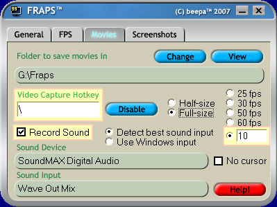

|
| Home | The Movie | Cast & Crew | Soundtrack | How-To Guide | Screenshots | Riley Entertainment |
In-Game Footage
In many places in the film, we see glimpses of Tycoon mode, Advanced Movie Maker, and the Post Production screen. These shots were achieved with the help of Fraps, a real-time video capture application. This program makes capturing video from games easy - just press a hotkey to start and stop the video capture! By default, Fraps uses F9 to initiate capture. As this is used by The Movies to quicksave your game, I switched the hotkey to the backslash character. As animated overlays run at 10 frames per second, I also set the frame rate in Fraps to 10.
I set The Movies to a resolution of 800x600, so that the resulting video was as close to the game's 768x432 resolution used when exporting in "Highest" quality. Each video I needed was processed in VirtualDUB, and cropped to include the portion of the screen I wanted. It was then exported as a sequence of TGA images, resized to 512x256. I then used the DDS Converter to convert these files into animated overlays. The high-resolution version used the 768x432 cropped videos directly.
Note that Open Broadcaster is also a good solution for capturing video game footage!

FRAPS and the settings I used. The video capture hotkey, record sound checkbox, and frame rate were all changed from their defaults.